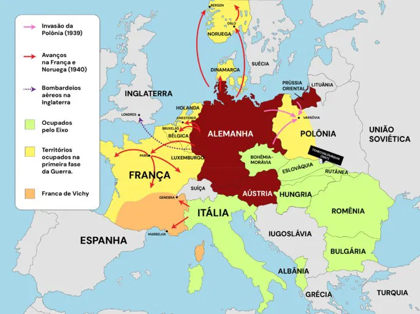
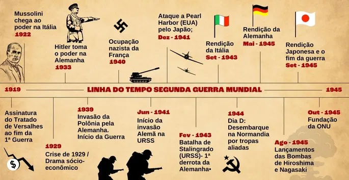

A primeira fase da 2ª Guerra Mundial iniciou-se com a invasão da Polônia pela Alemanha em 1939. Em reação à invasão da Polônia, França e Grã-Bretanha declararam guerra contra a Alemanha. Antes disso, tentaram impedir as ações militares de Hitler por meio de sanções diplomáticas e econômicas, mas sem sucesso.
Eficaz no campo de batalha, a Alemanha realizou em 1940 uma operação em que combinou ataques terrestres, aéreos e navais para ocupar a Dinamarca. O exército alemão também tomou a Noruega como forma de salvaguardar o comércio de aço com a Suécia e marcar posição contra a Grã-Bretanha. Para tanto, foi ocupado o porto norueguês de Narvik.
Em maio de 1940, Hitler ordenou a invasão da Holanda e da Bélgica. Após a ocupação desses países, as tropas nazistas concentram-se na luta contra a França, conseguindo conquistá-la. 
Mapa mostrando as invasões da Alemanha nazista durante a primeira fase da Segunda Guerra Mundial.
A França assina o armistício com a Alemanha em 22 de junho de 1940 e é dividida em duas áreas: uma administrada pelos alemães e a outra pelo Marechal Petáin, que colaborava com os nazistas.
Hitler volta seus esforços para a Grã-Bretanha e, no dia 8 de agosto, a Alemanha bombardeou as cidades britânicas com a Luftwaffe, a força aérea alemã. Embora tivessem em menor número, a Força Aérea Britânica (RAF), conseguiu repelir o ataque. Esta foi a única derrota de Adolf Hitler na primeira fase da guerra e permitiu aos Aliados a recompor suas forças. No ano seguinte, em 1941, o exército de Hitler chegou à Líbia, no norte da África, com objetivo de conquistar o canal de Suez. Em maio deste mesmo ano, Iugoslávia e Grécia foram ocupadas por tropas do Eixo.
O equilíbrio das forças caracteriza a segunda fase da Segunda Guerra. Esta etapa se inicia em 1941 com a invasão da União Soviética pelos alemães e termina em 1943 com a capitulação da Itália. A conquista da União Soviética tinha como finalidade a ocupação das regiões de Leningrado (hoje São Petersburgo), Moscou, Ucrânia e Cáucaso. A entrada do exército alemão ocorreu pela Ucrânia e, posteriormente, seguiu para Leningrado. Quando as forças de Hitler chegaram a Moscou, em dezembro de 1941, foram contidas pelo Exército Vermelho.
Paralelo ao conflito na Europa, os governos do Japão e dos Estados Unidos tinham as relações estremecidas. Antes da guerra, na década de 30, o Japão invadiu a China e, em 1941, a Indochina francesa. Como consequência, em agosto daquele ano, os EUA decretaram o embargo comercial ao Japão, exigindo a desocupação da China e Indochina.
Em meio a disputas diplomáticas entre EUA e Japão, este bombardeou a base naval de Pearl Harbor, no Havaí, e prosseguiu a ofensiva contra os americanos na Ásia meridional e no Pacífico. Diante do ataque, os Estados Unidos declararam guerra ao Japão.
Os japoneses invadiram a Malásia Britânica, o porto de Cingapura, a Birmânia, a Indonésia e as Filipinas. No meio da tensão, o Japão ocupou o porto de Hong Kong e ilhas no Oceano Pacífico que pertenciam à Grã-Bretanha e aos Estados Unidos. Além disso, a Alemanha e a Itália declararam guerra aos Estados Unidos. Até janeiro de 1942, a ofensiva japonesa resultou na conquista de 4 milhões de quilômetros quadrados e o comando de uma população de 125 milhões de habitantes.
O cenário da Segunda Guerra Mundial começa a mudar ao final de 1942, quando os Aliados passam a ter êxito contra os ataques do Eixo. A Batalha de Stalingrado marca o início dessa fase, alterando o curso do conflito. O Japão sofre importantes derrotas no Pacífico, sendo impedido de conquistar a Austrália e o Havaí. As forças britânicas e americanas também têm êxito na Líbia e Tunísia. A partir do norte da África, os Aliados desembarcam na Sicília e invadem a Itália, em 1943.
A partir da capitulação da Itália, a Segunda Guerra Mundial entra na terceira fase, que termina com a rendição do Japão em setembro de 1945. Na Itália, o governo de Benito Mussolini (1883-1945) é destituído pelo rei Vítor Emanuel III em julho de 1943. No norte do país é proclamada a República de Saló, um Estado reconhecido somente pelos países do Eixo. Em setembro do mesmo ano, a Itália firma o armistício com os Aliados.
Após esse ponto, a Itália muda de lado e declara guerra à Alemanha em outubro de 1943. Em abril de 1945, depois da captura das forças nazistas na Itália, Mussolini tentou fugir para a Suíça, mas foi detido e fuzilado pela resistência. O cerco à Alemanha se concretiza com a queda da Itália. Em paralelo, em 1944, os soviéticos libertaram a Romênia, a Hungria, a Bulgária e a Tchecoslováquia.
Em 6 de junho daquele ano, ocorreu o Dia D, como é chamado o desembarque do exército Aliado na Normandia, (França), que provocou o recuo dos alemães e a libertação da França.
Ainda na Europa, o Exército soviético libertou a Polônia em janeiro de 1945. No mesmo ano, conquistou a Alemanha e derrotou o III Reich. Em 8 de maio, o conflito terminou na Europa. Já no Pacífico, os Estados Unidos pressionam o Japão e no fim de 1944, conquistam as ilhas Marshall, Carolinas, Marianas e Filipinas. A Birmânia é conquistada em 1945 e a ilha de Okinawa é ocupada.
Sem perspectiva de capitular, o Japão sofre a pior ofensiva bélica da Segunda Guerra Mundial. Em 6 de agosto de 1945, os Estados Unidos jogam uma bomba atômica sobre Hiroshima e em 9 de agosto fazem o mesmo em Nagasaki A rendição do Japão é assinada em 2 de setembro de 1945, pondo fim ao conflito no Pacífico. 
Enventos da segunda guerra mundial em ordem cronológica